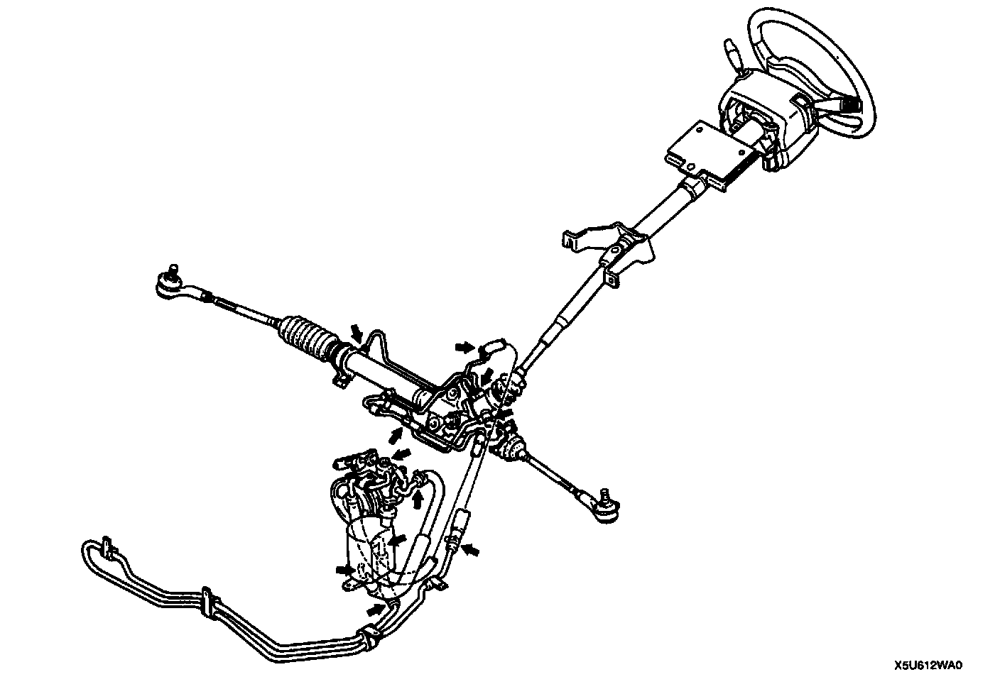

Fluid Leakage Inspection
FLUID LEAKAGE INSPECTION
Caution:
- Never hold the steering wheel to the extreme left or right for more than five seconds with the engine running. This could damage the power steering pump.
- Start the engine and let it idle. Turn the steering wheel fully left and fully right to apply fluid pressure. Inspect the points shown in the figure for fluid leakage.